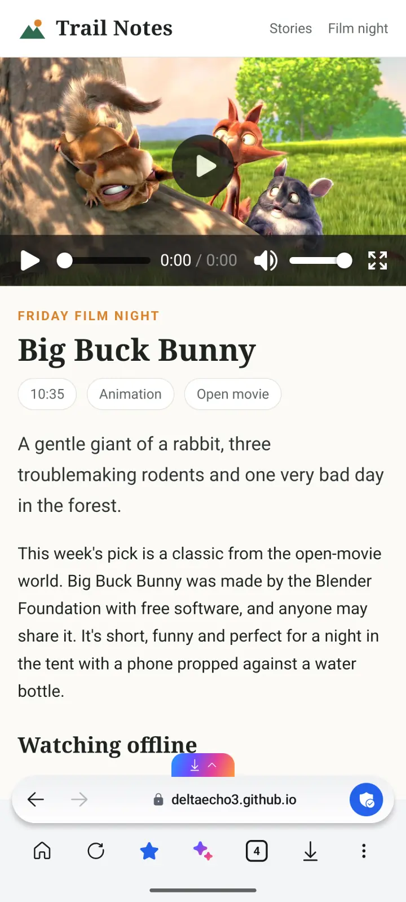
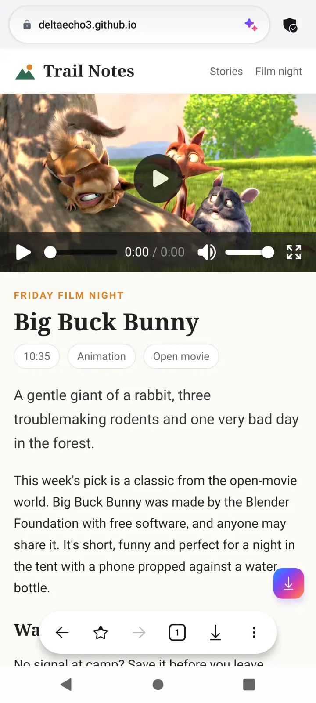
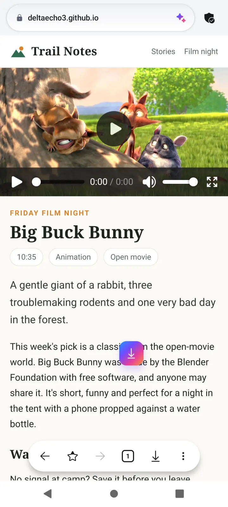
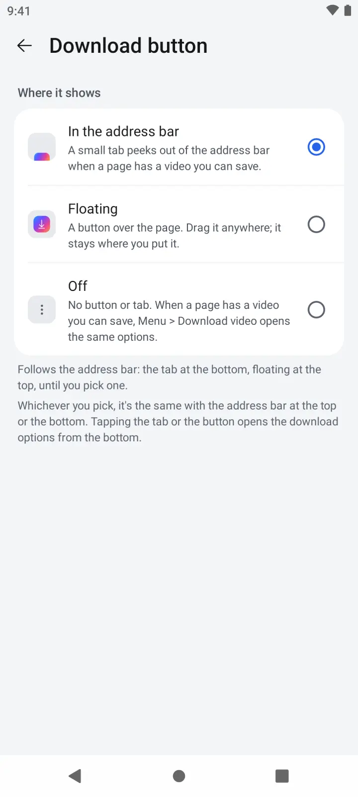
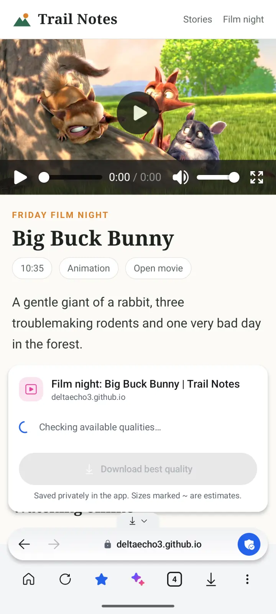
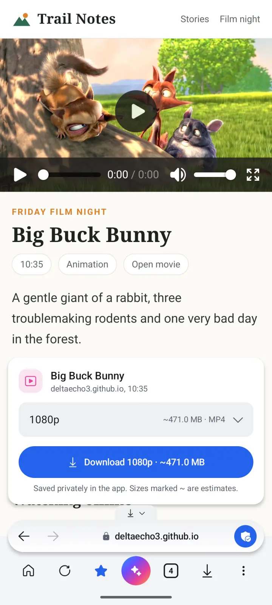
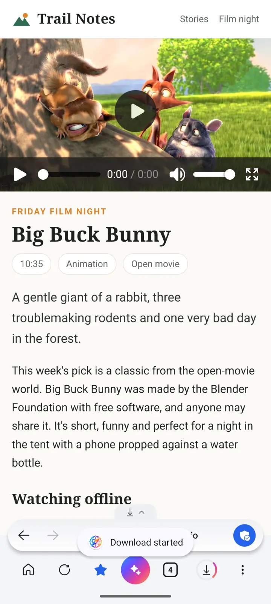
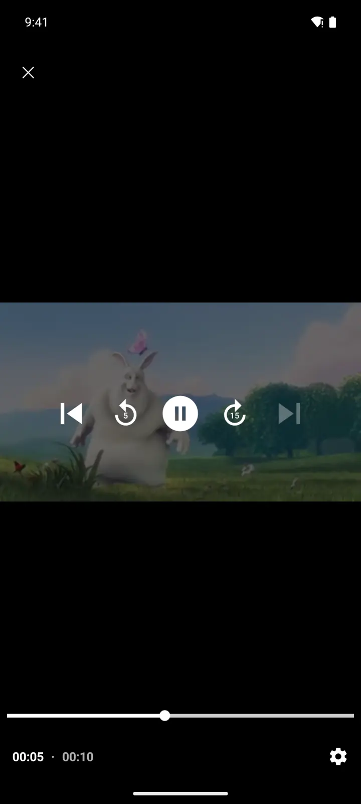

Save a video from a page
Walkthrough
Find a video on a page, save it and play it later in Wayward. Only save videos you have the right to keep: see is it OK to download videos?. Wayward never gets around copy protection.
1. Look for the download button
Open the page with the video. When Wayward finds a video it can save, it offers it where the download button is set to show (below). By default, that follows the address bar:
- With the address bar at the bottom, a small tab peeks out of the address bar (TalkBack: Video downloads). It glows in Wayward's colors until you open it, and pulses three times when the page's video first shows up.
- With the address bar at the top, a rounded square in Wayward's colors with a download arrow floats over the page, at the bottom right just above the dock (TalkBack: Download this video). It pulses three times too. When the bars slide away, it slides down to the corner.
The floating button can be dragged anywhere: let go and it stays exactly there, on every page, after a restart too. If you let go over the bars or off the edge, it moves just inside, clear of them. Turned sideways or on another screen, it keeps the same place relative to the screen. With TalkBack, its actions move it a step: Move up, Move down, Move left and Move right.



No button? Try playing the video first, since some pages only load it then. Some videos can't be saved at all; see why a download didn't work.
Where the download button shows
Settings > Customize > Download button has three choices under Where it shows, the same whether the address bar is at the top or the bottom:
- In the address bar: a small tab peeks out of the address bar instead (TalkBack: Video downloads). It glows in Wayward's colors until you open it, and pulses three times too. With the address bar at the top it peeks out of the dock at the bottom instead, and comes and goes with the dock; with the Minimalist Address Bar at the top, which has no dock, it hangs below the bar. Its line on the screen says which.
- Floating: the button above.
- Off: no button or tab. On a page with a video you can save, the ⋮ menu has Download video, first among the page's items.
Until you pick one, it follows the address bar: the tab with the address bar at the bottom, the floating button with it at the top, and the screen says Follows the address bar: the tab at the bottom, floating at the top, until you pick one. Once you pick, your pick stays wherever the address bar goes. Reset in Customize goes back to following the address bar. The welcome asks too, on Make it yours, and keeps what it shows there as your pick.

2. Open the download options
Tap the button (or the tab, or Download video in the menu). The download options rise from the bottom of the screen. While Wayward looks up what the video comes in, they say Checking available qualities…. The first time after Wayward starts, this can take a moment longer while its video downloader gets going.

Then you see:
- the video's title, and the site with the video's length (like "example.com, 4:12"),
- the qualities it comes in, each with its file size and type. The best one Wayward's own player can open is picked for you. A file that only shows one size is named by its height when the page's player says it ("720p"), and one whose type isn't known until it's downloaded shows only its size,
- Sound, when the video has its sound in more than one language: pick the language you want,
- the button, which says what you'll get, like "Download 720p · 48.0 MB",
- a note on where it's saved: Saved privately in the app. Sizes marked ~ are estimates. (in a private tab, or with no download folder set), Saved to your download folder. Sizes marked ~ are estimates. (with a folder set in Settings > Downloads), or just Sizes marked ~ are estimates. when Ask where to save is on, since you pick the place after the download starts.

A quality you already saved from this page is grayed out and marked Already downloaded (not in private tabs).
3. Or make a GIF
Short videos (30 seconds or less) also have a GIF row: "no sound · made on your phone". Pick it and the button turns into Download GIF. Wayward makes the GIF on your phone, from the first 30 seconds at most, without sound.
4. Download it
Tap the download button. Wayward says Download started, and a ring around the Downloads button on the bar fills as it goes. The floating button gets a frame that fills with the progress too, with the percent inside, while you're on the video's page. Tap it then to see the download in Downloads. The ⋮ menu's Downloads shows how many are under way. The video is kept inside Wayward, or in your downloads folder if you picked one (a private tab's downloads always stay inside).

You can keep browsing, or leave Wayward: the download carries on. If Android asks whether Wayward may send notifications, allowing it shows the download's progress there.
5. Find it in Downloads
Tap Downloads on the bar (or Downloads on the start page, or in the Tabs screen's ⋮ menu). Your downloads are grouped by day, each with an icon for its kind, its name, its size and the site it came from. If the downloads lock is on, unlock first.

6. Watch it
Tap the video. It plays in Wayward's own player, full screen on black, with the usual controls. Tap the round X to go back to your list, which is just as you left it.

Next: choose where downloads go, and what to do when a download doesn't work.